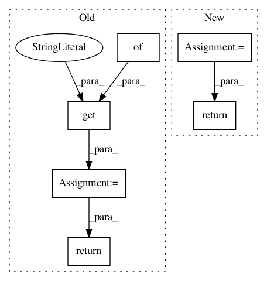

20fe7b4cbf62f6223241d6cafc6e8ea48701efdd,softlearning/value_functions/utils.py,,get_Q_function_from_variant,#Any#Any#,70
Before Change
def get_Q_function_from_variant(variant, env):
Q_params = variant["Q_params"].copy()
kwargs = Q_params.get("kwargs", {})
Q_function = Q_FUNCTION_FUNCTIONS[
Q_params["type"]](
env.active_observation_shape,
env.action_space.shape,
**kwargs)
return Q_function
def get_V_function_from_variant(variant, env):
V_params = variant["V_params"].copy()
After Change
observation_shape = env.active_observation_shape
action_shape = env.action_space.shape
input_shapes = (observation_shape, action_shape)
return get_value_function_from_params(Q_params, input_shapes)
def get_V_function_from_variant(variant, env):
V_params = variant["V_params"].copy()
In pattern: SUPERPATTERN
Frequency: 3
Non-data size: 6
Instances
Project Name: rail-berkeley/softlearning
Commit Name: 20fe7b4cbf62f6223241d6cafc6e8ea48701efdd
Time: 2018-10-22
Author: hartikainen@berkeley.edu
File Name: softlearning/value_functions/utils.py
Class Name:
Method Name: get_Q_function_from_variant
Project Name: rail-berkeley/softlearning
Commit Name: dad8e51dff940ecdd75c1d553f34a9d82c032c8f
Time: 2018-11-30
Author: hartikainen@berkeley.edu
File Name: softlearning/preprocessors/utils.py
Class Name:
Method Name: get_preprocessor_from_variant
Project Name: rail-berkeley/softlearning
Commit Name: 20fe7b4cbf62f6223241d6cafc6e8ea48701efdd
Time: 2018-10-22
Author: hartikainen@berkeley.edu
File Name: softlearning/value_functions/utils.py
Class Name:
Method Name: get_V_function_from_variant